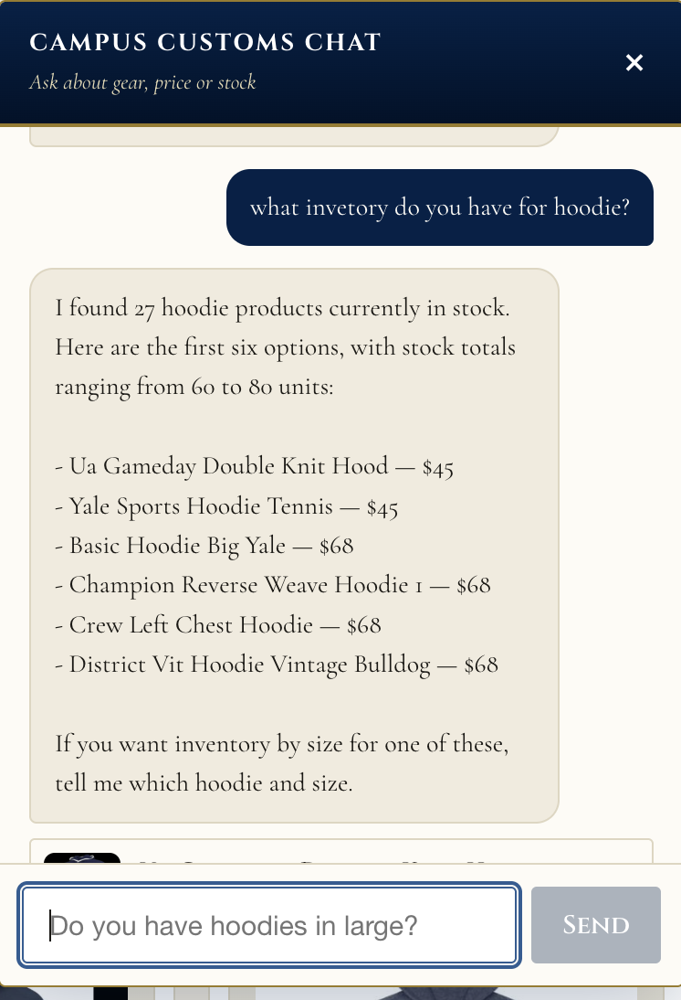
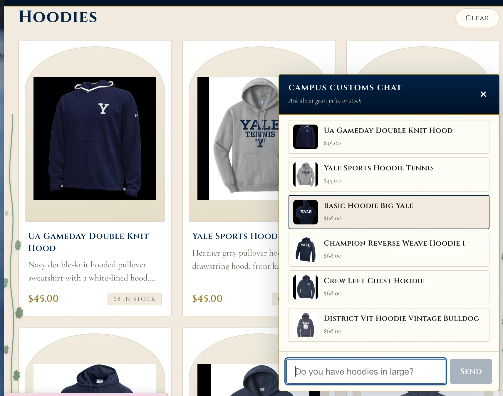
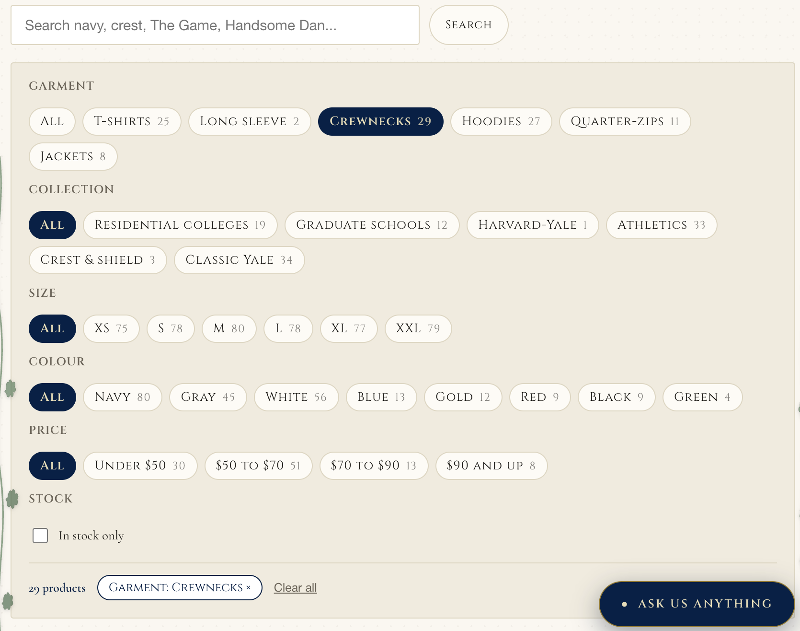
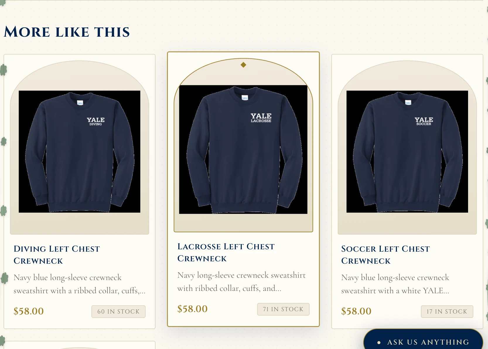
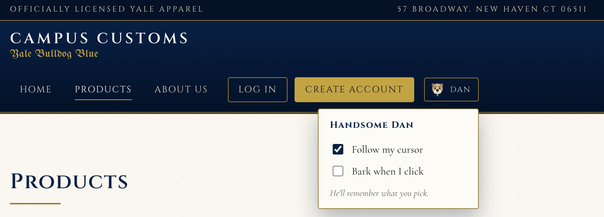

How this was run
Backend: cd backend && uvicorn main:app --reload --port 8000.
Front end: npm --prefix frontend run dev on
http://localhost:5180. Every screenshot below is from that running site.
Under each one, the numbers the site showed are checked against
campus_customs.db directly.
The chat reports real inventory and real prices
Asked "what inventory do you have for hoodie?", the assistant answered with a
count, six named products with prices, and the range of stock totals. None of those
numbers come from the model — it called search_products, and every figure
below was read out of the database.

| What the chat said | What the database says | |
|---|---|---|
| "27 hoodie products" | 27 products in the Hoodies category | matches |
| Ua Gameday Double Knit Hood — $45 | $45, 68 in stock | matches |
| Yale Sports Hoodie Tennis — $45 | $45, 67 in stock | matches |
| Basic Hoodie Big Yale — $68 | $68, 60 in stock | matches |
| Champion Reverse Weave Hoodie 1 — $68 | $68, 80 in stock | matches |
| Crew Left Chest Hoodie — $68 | $68, 65 in stock | matches |
| District Vit Hoodie Vintage Bulldog — $68 | $68, 69 in stock | matches |
| "stock totals ranging from 60 to 80 units" | Lowest 60, highest 80 | matches |
The "27" is worth noting on its own. The raw garment_type column holds 22
different spellings of about six categories, so matching it literally would have
returned 5 hoodies. The backend normalises it first, which is why the count is right.
A category question fills the page with product cards
The same hoodie question did not just answer in the chat bubble — the page itself rendered the matching products as full cards under the heading Hoodies. This is the API contract from Problem 7: the agent returns structured product ids, and the front end renders them.

| The heading reads Hoodies | The agent chose that label itself, in the shopper's words. |
| Cards show $45, $45, $68 and stock badges | Every field was rebuilt from the database after the agent chose the ids — the model never supplies a price. |
| Cards are the same component as the catalogue grid | Clicking one opens the full product page, exactly like a card found by browsing. |
Usability feature: the filter bar
The products page used to offer one way to narrow 102 items — six garment chips. It now filters on five facets at once, each with a live count, and the whole filter state lives in the URL so a narrowed grid can be shared or bookmarked.

| Facet shown | Database | |
|---|---|---|
| Crewnecks 29 selected → "29 products" | 29 crewnecks | matches |
| T-shirts 25, Hoodies 27, Quarter-zips 11, Jackets 8, Long sleeve 2 | Same, and 25+2+29+27+11+8 = 102 | matches |
| Collection: 19 + 12 + 1 + 33 + 3 + 34 | = 102, every product classified | matches |
| Size XS 75, S 78, M 80, L 78, XL 77, XXL 79 | Products with stock > 0 in that size | matches |
Collection replaced a planned mens/womens filter. Checking the data first showed only 3 of 102 products carry a men's label and none carry a women's, so that filter would have read "Men's (3)" beside "everything else (99)". Collection divides all 102 and answers the same question — what am I shopping for.
Usability feature: related products
Every product page now ends with a "More like this" row, ranked by shared collection, then garment type, with in-stock items first. The product page used to be a dead end.

| Card | Database | |
|---|---|---|
| Diving Left Chest Crewneck — $58, 60 in stock | $58, 60 units, Athletics / Crewnecks | matches |
| Lacrosse Left Chest Crewneck — $58, 71 in stock | $58, 71 units, Athletics / Crewnecks | matches |
| Soccer Left Chest Crewneck — $58, 17 in stock | $58, 17 units, Athletics / Crewnecks | matches |
Design: Handsome Dan, and the switch that turns him off
The cursor is Handsome Dan, drawn as inline SVG, and clicking produces a bark synthesised in the Web Audio API. Both are switchable from the nav, and the choice is remembered.
